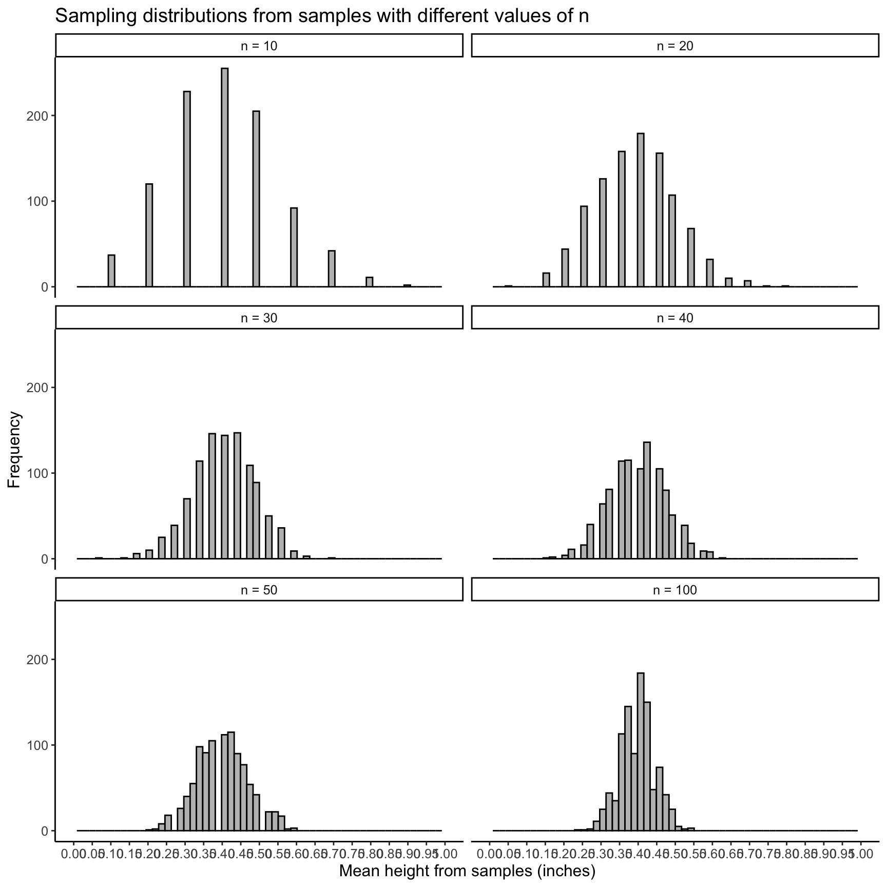

2. Why is CLT for n > 30? And why does the standard error decrease as n increases?
Okay! We can start by simulating samples with different n’s. In this case, we need to use a different problem set up than heights. I am going to do coin flips with a 0.3 probability of heads. I am going to look at the proportion of heads I flip.
For a given \(n\), say \(n=10\), I have taken 1,000 samples with 10 coin flips in each sample. I take the mean proportion of heads from the 10 flips for each sample. So then each sample has a sample mean to represent its respective 10 flips. Thus, I have 1,000 sample means for \(n=10\).
I do this process for different values of n. So for \(n=40\), I have done the same thing: I have taken 1,000 samples with 40 coin flips in each sample. I take the mean proportion of heads from the 40 flips for each sample. So then each sample has a sample mean to represent its respective 40 flips. Thus, I have 1,000 sample means for \(n=40\).
Below I have plotted the 1,000 sample means for different values of n: 10, 20, 30, 40, 50, and 100.
If you would like to see how I simulated this and plotted it
library(tidyverse)library(ggplot2)set.seed(48151623)means=NULL;sds=NULL; n=NULLfor (j inc(10, 20, 30, 40, 50, 100)){for(i in1:1000){ heads =rbinom(n = j, size =1, prob =0.4) n =c(n, j) means =c(means, mean(heads)) sds =c(sds, sd(heads))}}means_all =as.data.frame(cbind(n, 1:1000, means, sds)) %>%mutate(mu =0.5, SE =sqrt(0.5*0.5)/sqrt(n))n_labels =c(`10`="n = 10", `20`="n = 20", `30`="n = 30", `40`="n = 40", `50`="n = 50", `100`="n = 100")samp_dist_plots = means_all %>%ggplot(aes(x=means)) +geom_histogram(color="black", fill="grey", bins=60) +labs(x="Mean height from samples (inches)", y="Frequency", title="Sampling distributions from samples with different values of n") +scale_x_continuous(breaks =seq(0, 1, by =0.05), limits =c(0, 1)) +facet_wrap( ~ n, ncol=2, labeller =as_labeller(n_labels)) +theme_classic() +theme(text =element_text(size =12))samp_dist_plots

We are left with the questions:
Are all of these approximately normal with a mean of \(\mu\) and a standard error or \(\dfrac{\sigma}{\sqrt{n}}\)? (Asking if the CLT applies to all of them)
Why is the standard error smaller when n increases?
1. Are all of these approximately normal with a mean of \(\mu\) and a standard error or \(\dfrac{\sigma}{\sqrt{n}}\)? (Asking if the CLT applies to all of them)
You can see that for \(n=10\) and \(n=20\), the distributions do not look normal. They have a right skewed tail. So the CLT would not work here!
2. Why is the standard error smaller when n increases?
This is because the sample means become more precise when n increases.
The proportion of heads in a sample of 100 flips, can take on values like 34/100 or 32/100. While the proportion for 10 flips can only take 2/10 or 3/10 or 4/10. The more flips, the more precise a proportion we can get.
3. Difference between standard deviation and standard error
Standard deviation is defined generically (and mathematically) for any data. We often refer to the population standard deviation simply as the standard deviation (\(\sigma\)).
The standard deviation of a single sample is called \(s\)!!
And the standard deviation of the sampling distribution (of sample means) is called the standard error!
4. Why wouldn’t the 10 blue sample’s mean not similar to the red sample?
It would be similar if it pulled from the same population! But because it is a random sample, we will just get 10 people with their own heights. And the 10 people in the blue group might just have different heights than the 10 people in the red group! Thus, they would have slightly similar, but likely not exactly the same, sample means.
5. Central limit theorem vs sampling distribution
The Central Limit Theorem is a theory can we can apply to our sampling distribution! The sampling distribution is how sample means would be distributed if we took many, many samples. The Central Limit Theorem allows us to say that the sampling distribution is approximately normal. By saying it’s approximately normal, we can then use the properties of a normal distribution to do further analysis.